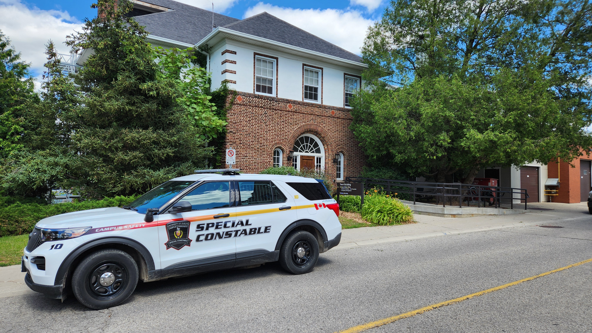

Campus Safety Office (CSO) - Work Term Report Summer 2025
Welcome to my website! My name is Mohammad Sameer and I'm a 4th year Software Engineering student at the University of Guelph. This blog will shed light on my 4 month co-op work term as a Web Designer at the University of Guelph.

About the Campus Safety Office
The Campus Safety Office (CSO) at the University of Guelph is responsible for maintaining a safe and secure campus environment. Established in 1967 and staffed by Special Constables, the CSO enforces federal, provincial, and municipal laws as well as University policies, while providing 24/7 emergency response and dispatch services. They monitor alarms and surveillance systems, administer the U of G Alert notification system, and collaborate closely with local police, fire, and mental health services. In addition to law enforcement, the CSO runs safety and prevention programs such as SafeWalk, crime prevention education, and the IMPACT crisis response initiative, all aimed at supporting the well-being of the university community.
Fun Facts
- The SafeWalk program has assisted +10,000 people
- The Campus Safety Office is located in Trent Building
Job Description - Web Designer Co-op
 As a Web Designer with the Campus Safety Office,
I was responsible for designing and maintaining the office’s website to ensure important safety
information was clear, accessible, and user-friendly. My role included updating web content, improving site navigation, and applying accessibility standards such as AODA and WCAG.
I also collaborated with staff and stakeholders to translate safety policies and resources into digital formats, ensuring that students, staff, and visitors could easily access the information they needed.
In addition to web design, I contributed photography by taking pictures for the website to enhance its visual appeal and provide authentic representation of the office’s services.
I also gained experience working with Drupal, the content management system used by the University of Guelph, and applied auditing tools to identify and resolve accessibility issues.
As a Web Designer with the Campus Safety Office,
I was responsible for designing and maintaining the office’s website to ensure important safety
information was clear, accessible, and user-friendly. My role included updating web content, improving site navigation, and applying accessibility standards such as AODA and WCAG.
I also collaborated with staff and stakeholders to translate safety policies and resources into digital formats, ensuring that students, staff, and visitors could easily access the information they needed.
In addition to web design, I contributed photography by taking pictures for the website to enhance its visual appeal and provide authentic representation of the office’s services.
I also gained experience working with Drupal, the content management system used by the University of Guelph, and applied auditing tools to identify and resolve accessibility issues.
Goals
Learned How to Use Drupal to Design and Update Content
My first goal was to learn how to use Drupal to design and update content for the Campus Safety Office website. To achieve this, I used online resources such as YouTube tutorials to build my understanding of Drupal, while also seeking feedback from colleagues and applying it to improve my design iterations. Success for this goal meant becoming comfortable with creating and managing more complex design ideas, receiving positive feedback from my colleagues, and being able to independently update and publish content on the website using Drupal.
Improve Communication with Stakeholders
Another goal I focused on during my co-op was improving my communication with stakeholders. I worked towards this by meeting regularly with stakeholders to gather feedback on website content and design, and by practicing how to summarize technical details in clear and simple language for non-technical audiences. I considered this goal successful when stakeholders felt their content needs were well understood and accurately reflected on the website, and when my supervisor gave me positive feedback on my communication and collaboration skills.
Learned How to Use AODA Auditing Tools to Evaluate and Improve Accessibility
I learned how to use AODA auditing tools to evaluate and improve the accessibility of the Campus Safety Office website. I worked on this by using auditing software to scan the site for accessibility issues, identifying areas for improvement, and implementing changes in line with AODA standards. Success for this goal was measured by ensuring the website passed accessibility checks with minimal or no issues reported, along with confirmation from my supervisor that the site’s accessibility compliance had improved.
Conclusion
Reflecting on my co-op experience at the Campus Safety Office, I am proud of the skills I developed and the contributions I made. From learning Drupal to design and update web content, to applying AODA auditing tools to improve accessibility, this opportunity allowed me to grow both technically and professionally. I gained valuable experience in web design, accessibility compliance, photography, and stakeholder communication, all while ensuring that important safety information was clear and accessible for the campus community. These skills will continue to shape my future work as a designer and problem-solver.
Working with such an incredible team throughout my co-op term with Ontario One Call was an incredible experience. I'd like to express my sincere gratitude to my manager, Jhenny Villagra, for her guidance, support, and encouragement throughout my co-op term at Ontario One Call. Her mentorship played a significant role in helping me grow both professionally and personally. I also want to thank the entire Reporting and Analytics Team for their collaboration and willingness to share their expertise, making this experience enjoyable. I'd also like to thank my co-op advisors, Kate McRoberts and Anne-Marie Zawadzki for all of their support and advice throughout the whole co-op process.